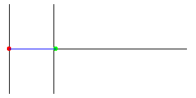
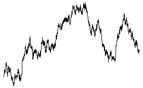

| Brownian motion is easier to understand in the one-dimensional case. |
| Suppose a particle (red) moves only along the y-axis. |
| We can graph (green) its motion as a function of time (t on the horizontal axis). |
|  |
| Click the picture to repeat. |
| To begin to develop a visual sense of the properties of 1-dimensional Brownian motion, here is the graph of a longer simulation, 2000 points. |
| We call this function Y(t). |
|  |
Return to Brownian motion.